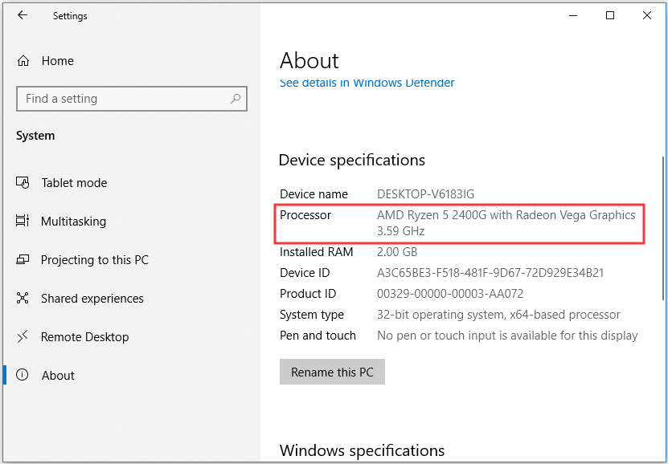

The reason for wanting to upgrade a CPU or processor varies for everyone. Asking yourself questions as well as doing research will help you determine whether upgrading your cpu provides benefits.
If you are unfamiliar with any terms used on this page, please refer to the General Defintions page.
What Functions Do You Use Your Computer For?
Consider what functions you use your computer for. Are you using CPU intensive applications such as editing, video, and gaming software, or are you using it for day-to-day functions? What are your power requirements for personal or work use? You must consider why exactly you want to upgrade your CPU and whether the cost of a new CPU is worth the performance gain.
How Long Have You Have Your Computer?
If your CPU is relatively new, it should be fine for the most part and wouldn't need to be upgraded. But if your CPU is 5-10+ years old there could be benefits to upgrading it, but this depends if the performance affects the functionality of the computer.
How Is Your CPU Performance?
Slow performance could be caused by other issues like old thermal paste, a loose or broken CPU cooler, or outdated BIOS settings. Additionally, there are practical reasons for upgrading a computer with sufficient performance. If you are unsure about the performance, and whether your CPU causes the poor performance, it will be helpful to identify this using these steps:
- On Windows 10, click the Start button, then type “about” into the search field. Click on About your PC and the following Window shows up: 
- Run CPU Benchmark such as Cinebench R23 to compare your CPU’s scores to online database
View of Windows "About" settings.
If score matches with what others reported your CPU performs to its specifications and your performance problems could be caused by something else
Is Your CPU Bottlenecking and Limiting Your CPU Performance?
To check for a bottleneck, you want to run applications and games that you use regularly. To check your CPU’s utilization, you can use Windows Task Manager to monitor your CPU’s utilization:
- Press Ctrl- Shift + Esc to open Task Manager, navigate to the ‘Performance’ tab, then select CPU. You should see a graph showing your CPU’s utilization percentage.
- Right-click the graph, hover over ‘change graph to’, and select ‘logical processors’. This should show the utilization of all your CPU’s cores and threads.
- It should be clear if the CPU bottlenecks the rest of the system.
The left hand side of Task Manager’s Performance shows CPU utilization. If CPU utilization is maxing out most of its core, showing a percentage close to 100%, then you would likely benefit from having a CPU with more cores.